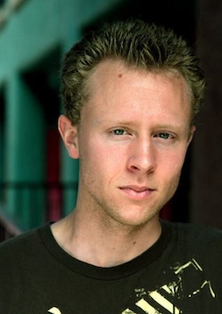

About Me

My name is Josh Dluehosh, yes, I know it rhymes. I was born and raised in Tucson, AZ. After graduating high school, I moved up to Flagstaff, AZ to attend NAU for my undergraduate degree in Electronic Media & Film. After college, I moved back to Tucson for a few years and worked various jobs, including one at a software company called OpenText. I troubleshot enterprise fax servers for a multitude of different companies ranging from small law firms and hospitals to the NFL.
In 2015 I made the move out to Los Angeles to pursue my "dreams" and to "level up" from my hometown, so to speak. Due to financial obligations, I took the first job I could find at a lighting company as a "Lighting Controls Specialist," aka a field tech.
Basically, each evening I got an e-mail with an address and a phone number, then, bright and early, or should I say, dark and early (usually 3-5 AM) I'd drive to the address and call the #. From there, assuming they answered, I'd figure out what it was I'd actually be doing that day. My main tasks were "programing lighting control systems," which ultimately is just data entry plus a check box and drop down arrow here and there. But every day and every job was a little different.
I ended up getting the lead for a lot a large scale projects for well known companies, most notable was the Google Spruce Goose. If you're unfamiliar, Google bought the giant hangar in Playa Vista where Howard Hughes built the Spruce Goose. If that still makes no sense, watch "The Aviator." Anyway, Google pretty much built a four story town inside the hangar, and I was in-charge of making sure each and every light in the place worked correctly and was able to be controlled to their desires. My position as a whole wasn't terrible, but a lot of parts were, and I knew after about three months I didn't want to do it anymore. However, it took me three years to actually accumulate enough savings and finally resign. Thus, bringing me to this Bootcamp!
Outside of work, I enjoy many things including video games, movies/TV, photography, sports, and pretty much any outdoor activity. Video games are probably what I'm most passionate about, whether it's playing them, or making them. When it comes to TV and movies, I enjoy every aspect...watching, writing, filming, directing, editing, acting (though I'm probably terrible), etc. I've played almost every sport at one point in my life, but I'd have to say football and baseball are the two I enjoy most. If you're a Steelers fan, hell yeah! If you're a Ravens fan, you may want to look in the mirror and reconsider some life choices. Hiking, rock climbing, fishing, skateboarding, and biking are amongst my favorite outdoor activities...Oh, and I love the beach! I'm a sucker for a nice sunset and I can build pretty dope sand castles.